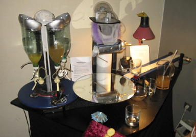

|  |
.......................... COCK BOT ONE
Ein Prozessor-gesteuerter Longdrink-Robot mit einfacher Knopfbedienung, entwickelt von Chris Veigl. Er mixt folgende Drink's: Tequila Sunrise ~ Harvey Wallbanger ~ Screwdriver ~ Campari Orange ~ Cuba Libre.
winning award Kat.1, 2001
|